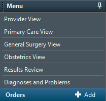
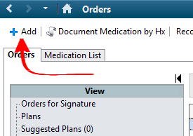
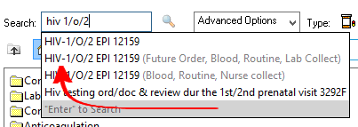
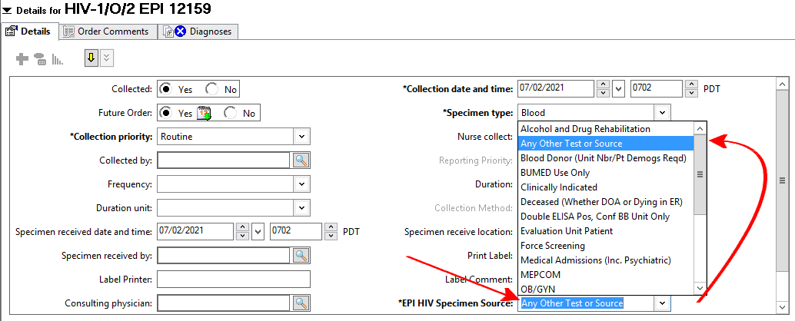
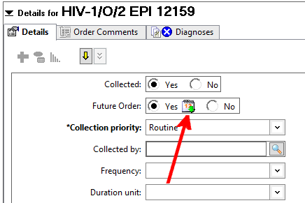
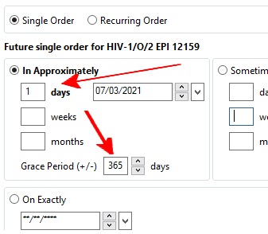
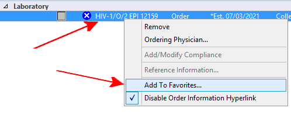
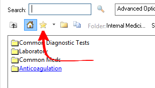

When I order an HIV or Hep C screening test, I set the order to have a grace period of 1 year so that patients can choose to get the lab done months later if desired.
Go to the orders section

Click the add button

Search for "HIV 1/O/2"

Set the specimen source to "Any Other Test or Source"

Click the calendar icon

Set the grace period to 365 days

Before signing the order, right click and add the order to favorites.

Access favorited orders by clicking the add button, then clicking the star icon
